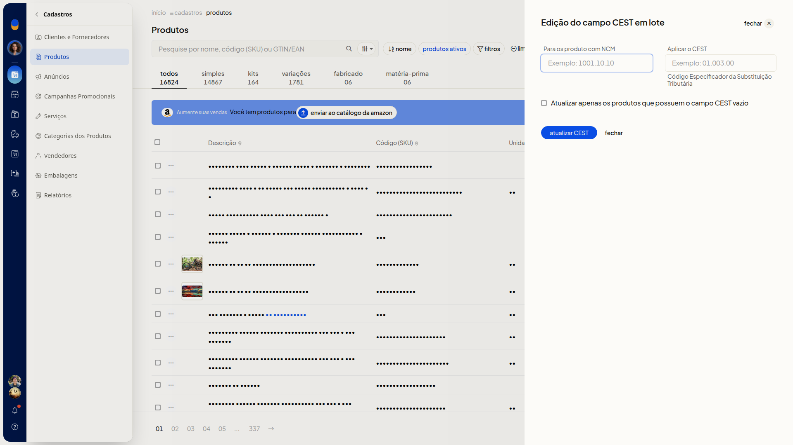
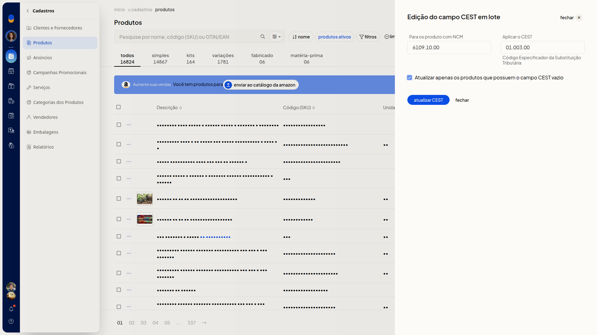

Editar o CEST dos produtos em lote
Instruções
-
Acesse Cadastros > Produtos.
-
Clique em Mais ações.

-
Clique em Editar CEST dos produtos em lote.

-
Digite o NCM em Para os produto com NCM. O campo não é obrigatório.
-
Digite o código em Aplicar o CEST. O campo não é obrigatório.
-
Marque Atualizar apenas os produtos que possuem o campo CEST vazio se quiser limitar a atualização aos produtos desse NCM que estão com o CEST vazio.

-
Clique em atualizar CEST para aplicar o CEST aos produtos do NCM informado. Para sair sem aplicar, clique em fechar.